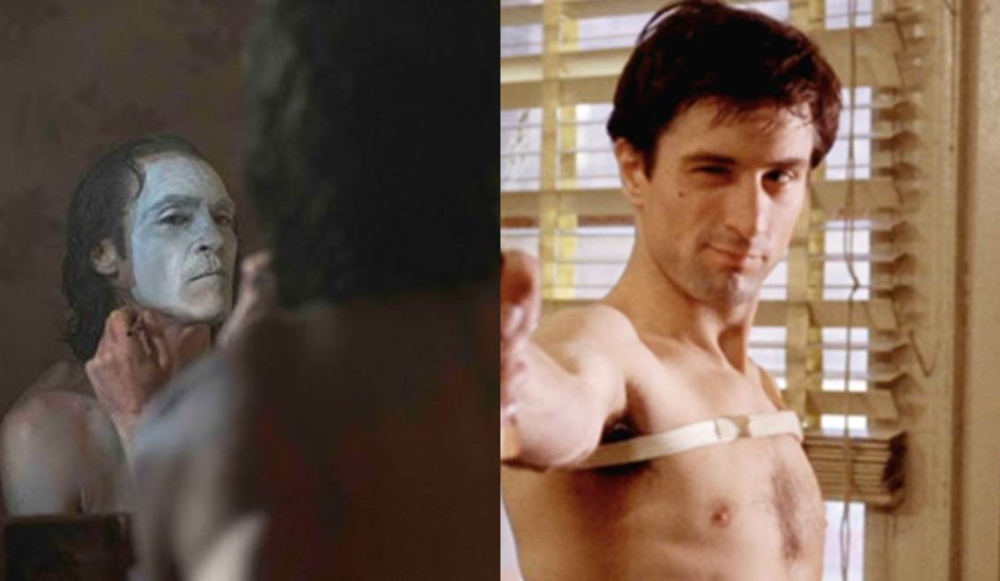
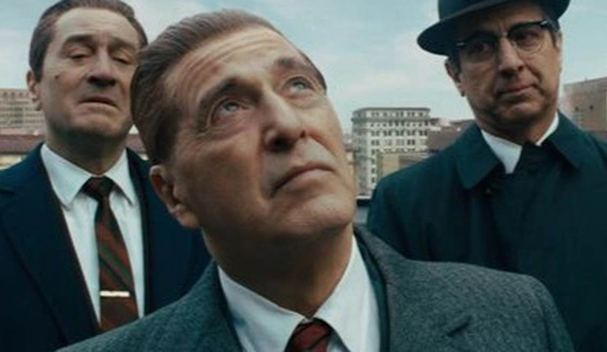

Oscar 2020: Martin Scorsese – “Bố Già” Của Điện Ảnh Thế Giới
Cảm thấy chán chường vì cuộc sống, chất chứa phiền muộn lo âu tương lai, nếu quá áp lực thì lời an ủi động viên là hãy thử đi làm một tay du côn có số má, việc này thậm chí còn oai hơn là làm tổng thống Mỹ đấy. Chắc hẳn đối với các tín đồ điện ảnh, “lời khuyên” vừa rồi khá quen thuộc, người đưa ra gợi ý về hướng đi đậm tính “chân-thiện-mỹ” ấy cũng là nhân vật chính trong bài viết hôm nay, Martin Scorsese - một trong những đạo diễn xuất sắc nhất mọi thời đại.
Khởi Đầu Đam Mê
Trước tiên, Martin Scorsese là ai? Tóm tắt tiểu sử ngắn gọn cho những ai chưa biết thì đây là một vị đạo diễn người Mỹ gốc Ý, bắt đầu sự nghiệp làm phim từ thập niên 70 cho đến nay, ông có 3 tác phẩm góp mặt trong danh sách 100 phim hay nhất của Viện Hàn Lâm Mỹ và sẽ góp mặt tại Oscar 2020 với tác phẩm mới nhất của mình – The Irishman.
(Đạo diễn Martin Scorsese)
Người đàn ông được xưng tụng là “ông trùm phim gangster” có tuổi thơ khá bình lặng, sinh ra ở New York và mắc bệnh hen suyễn từ nhỏ, nên thú vui giải trí duy nhất của ông chính là điện ảnh. Mỗi cuối tuần, cậu bé Marty (tên thân mật của Martin Scorsese) được gia đình đưa đến rạp chiếu phim và từ đó chìm đắm trong những thước phim đầy mê hoặc. Ngoài ra ông còn một người sùng đạo, thậm chí từng có dự định trở thành linh mục. Thế nhưng điện ảnh mới thật sự là đam mê lớn nhất của cuộc đời, việc lớn lên ở New York và chứng kiến sự xa hoa giàu sang lẫn cả những mặt trái đầy tệ nạn của thành phố đã trở thành nguồn cảm hứng lớn nhất trong các tác phẩm của ông. Ký ức về New York của Martin Scorsese đậm sâu đến mức trên phim, dấu ấn bản sắc và tinh thần Mỹ đã trở thành thương hiệu của ông. Đồng thời, việc tiếp cận các bộ phim theo chủ nghĩa Tân hiện thực Ý và Làn sóng mới Pháp, cộng với tín ngưỡng của một người sùng đạo truyền thống đã được ông tích tụ thành những tinh hoa đậm đặc chất riêng và giúp ông ghi danh vào hàng ngũ những nhà làm phim xuất sắc tiên phong của phong trào New Hollywood cùng với các tên tuổi khác như Francis Ford Coppola, Steven Spielberg, Roman Polansky, Ridley Scott, Woody Allen và Georges Lucas...
(Coppola,Scorsese và Spielberg)
Trong văn phòng làm việc của mình, Scorsese có một phòng chiếu phim dùng để xem những bản dựng đầu tiên của phim do ông thực hiện. Ông cũng thường tổ chức chiếu phim vào cuối tuần với những tác phẩm kinh điển trên thế giới. Rất nhiều poster và sách về điện ảnh cũng hiện diện tại đây. Có thể nói rằng, căn phòng chính là một thánh đường, một ngôi đền chứng tỏ lòng đam mê điện ảnh say đắm của Martin Scorsese.
Từ thập niên 60, sự già cỗi của tư duy điện ảnh truyền thống, lối mòn của những bộ phim chỉ có vẻ đẹp bên ngoài nhưng nội dung lại không đặc sắc đã dần khiến nền điện ảnh Hollywood đứng trên bờ vực khủng hoảng. Thế hệ diễn viên của thời kỳ vàng những năm 1930 – 1940 đã qua thời đỉnh cao, lớp người trẻ kế thừa cũng gặp nhiều khó khăn khi không có đất dụng võ. Cuộc cách mạng về diễn xuất do Marlon Brando khai sáng với phương pháp Method Acting chỉ giúp giải quyết ở khía cạnh chuyên môn người diễn viên, khán giả lúc này đã quá nhàm chán với tư duy điện ảnh kiểu cũ, những vấn đề thời đại, thực tại của xã hội, các cuộc chiến tranh mới là những gì mà người dân quan tâm. Một thời thế đầy biến động và đang có sự chuyển mình mạnh mẽ đã bắt buộc người làm điện ảnh phải thay đổi để thích nghi.
Thế là hàng loạt các đạo diễn trẻ xuất thân từ các trường điện ảnh với kiến thức và kỹ năng vững vàng đã tiến hành công cuộc phục hưng Hollywood trong thập niên 70 bằng việc cho ra đời nhiều bộ phim hay, nội dung phản ánh thời cuộc, gần gũi với đời sống và hàm chứa triết lý theo chủ nghĩa cá nhân. Góc nhìn trong những bộ phim giờ đây được tự do phát huy táo bạo và dữ dội hơn, ngoài ra nhiều phương pháp kể chuyện theo hướng đi mới, kỹ thuật quay – dựng cũng được phát triển mạnh mẽ. Nhiều phim phát hành trong giai đoạn này được liệt vào hàng kinh điển và chính thức đánh dấu việc quay trở lại ngôi vương của đế chế Hollywood. Đồng thời cũng từ đây mở ra cánh cửa dành cho việc phát triển của các nhà làm phim độc lập vào thập niên 80.
Đỉnh Cao Tài Năng
Nếu Woody Allen gây dấu ấn bằng những bộ phim hài, tình cảm đầy lãng mạn nhưng cũng cũng đầy tính châm biếm thông minh, Georges Lucas tạo nên cả một thiên sử thi Stars War mang tầm ảnh hưởng sâu vào văn hóa đại chúng, Steven Spielberg khai sinh khái niệm “bom tấn mùa hè” thì Martin Scorsese đánh thẳng vào những góc khuất của xã hội mà con người đối mặt hằng ngày. New York trong phim của Scorsese không hào nhoáng lãng mạn với Jazz và tình yêu như Woody Allen. Ông khắc họa nơi đây giống một thành phố đầy rẫy tệ nạn, một sư thối nát cần được “dội rửa” bằng một trận mưa to, đây cũng chính là quan điểm có phần chủ quan và khá cực đoan của nhân vật Travis Bickle (Robert De Niro) trong Taxi Driver do Martin Scorsese làm đạo diễn.
Tội ác, bạo lực, trần trụi, tình nghĩa anh em, sự phản bội…đều là những yếu tố thường thấy trong phim của ông. Quá trình trưởng thành gắn liền với những bộ phim Châu Âu cùng với việc sinh trưởng trong một gia đình truyền thống gốc Ý và sùng đạo đã ảnh hưởng khá nhiều đến phong cách làm phim của Scorsese. Câu chuyện trong phim thường không mang thông điệp quá cao siêu, đó có thể là nơi mà những gã giang hồ đàm đạo về tình nghĩa rồi cùng nhau phạm tội, sau đấy cả bọn có thể sẽ có người ăn năn, mặc cảm tội lỗi hoặc bình thản đón nhận cái kết xứng đáng. Có khi thì chỉ đơn giản nói về nỗi cô đơn, sự lạc lõng và bất mãn với chính xã hội, một cơn giận sẵn sàng trút lên bất cứ những loại “cặn bã” trong thành phố. Tất cả mọi thứ đều xảy ra tại New York, ông sinh ra và lớn lên ở đây, chứng kiến sự biến chuyển của nước Mỹ, mặt tốt và cả mặt xấu đều được phơi bày.

(Robert De Niro trong Taxi Driver)
Triết lý trong phim Martin Scorsese một phần ảnh hưởng từ một trong những thần tượng của ông, huyền thoại Akira Kurosawa. Nổi bật nhất là thủ pháp miêu tả tâm lý nhân vật dựa trên sự dằn xé nội tâm, nỗi đau mà họ đã phải trải qua, có thể những điều đấy đến từ sự bất công của xã hội, hoặc xuất phát từ tâm lý ức chế trước cách mà con người cư xử với nhau. Tự cô lập bản thân đến mức rối loạn nhân cách, lệch lạc nhận thức dẫn đến hành động bộc phát, nổi loạn, bất chấp tất cả để làm theo điều mà bản thân cho rằng đấy là vì công lý, chính là cách ông tạo ra một trong những nhân vật phản anh hùng xuất sắc nhất mọi thời đại – Travis Bickle trong Taxi Driver. Bộ phim đã đoạt giải Cành Cọ Vàng tại Liên hoan Phim Cannes 1976.
Sự cô đơn, bế tắc, bất mãn đã bao trùm lên Travis, anh là một người lính trở về từ chiến tranh Việt Nam. Vết thương tâm lý sau bao năm lửa đạn đã hằn sâu khiến Travis dường như trở thành một kẻ quái dị. Travis cố gắng hòa nhập với cộng đồng, thế nhưng sự đơn độc của anh đã trở thành một thứ tựa như “tri kỷ” đeo bám mãi. Tự nhận thức được chính bản thân mình đang “không ổn” nên anh tìm một công việc để có thể chú tâm lao động và giúp tinh thần nghỉ ngơi hồi phục. Đây là tuýp nhân vật có xuất thân trong sạch, “Sạch như chính lương tâm của tôi” – câu thoại ở đầu phim đã thể hiện rõ sự ngạo mạn, có chút gì đó bất cần và thách thức. Martin Scorsese đưa khán giả vào thế giới của nhân vật Travis thông qua những con phố với tông màu đầy u ám, những ánh đèn mang màu sắc rực rỡ nhưng không hề có sức sống. Những đoạn Jazz với tiết tấu dồn dập kéo dài tạo nên bầu không khí ngạt thở, không lối thoát. Nhân vật chính dường như chọn cách sống tách biệt với xã hội, có những hành vi không hề đáng mến nhưng cũng không kém phần đáng thương.
Chiến tranh đã ảnh hưởng và biến Travis như trở thành một kẻ cực đoan sống trong ảo ảnh do chính bản thân anh tạo ra. Sự cô đơn tưởng chừng đã giết chết anh nhưng lại vẫn còn đó một lối thoát khi anh có cơ hội hẹn hò với cô nàng Besty. Một lần nữa hy vọng duy nhất giúp Travis phấn chấn và tích cực hơn đã biến mất khi anh chàng mất điểm trầm trọng cũng bởi hành vi kì dị của mình. Martin Scorsese đặt Travis vào tính huống cay nghiệt nhất khi căn bệnh mất ngủ khiến công việc lái taxi vào ban đêm giúp Travis có cơ hội nhìn rõ những điều tồi tệ và giả tạo nhất đang tồn tại. Những hành khách như là các loài sinh vật gây ô uế trật tự xã hội, những cuộc trò chuyện vô thưởng vô phạt với hội tài xế như một chất xúc tác giúp anh thêm chán ghét thế giới. Travis viết nhật ký hằng ngày, tự trò chuyện một mình, nuôi dưỡng hoài bão sẽ “tẩy rửa” sạch sẽ những gì tệ hại nhất của New York.
Dần dần, chân dung của một kẻ mất trí và theo đuổi lý tưởng của riêng mình đã hiện rõ nơi Travis, một tâm hồn bệnh tật đã có ý định ám sát viên thượng nghị sĩ mà trước đó anh ta yêu mến, sẵn sàng giết chết một gã ma cô để cứu lấy Iris – cô gái điếm mà Travis tin (hoặc tự tưởng tượng ra) rằng có hoàn cảnh đáng thương giống anh, một nạn nhân đang gánh chịu sự thối nát của nhân loại. Ảo mộng do Travis vẽ ra có thể sẽ kết thúc có hậu theo cách mà anh được tung hô trên mặt báo như một người hùng, cũng có thể sẽ chỉ mãi là giấc mộng vĩ cuồng đầy lạnh lẽo của một kẻ cô đơn tội nghiệp.

(Joker - Taxi Driver)
Tầm ảnh hưởng và di sản của Taxi Driver có sức ảnh hưởng vô cùng lớn đến nền điện ảnh. Một trong những siêu phẩm ra mắt năm 2019 - Joker, chính là ví dụ điển hình. Bộ phim về “Hoàng Tử Tội Phạm” có nét tương đồng từ việc xây dựng tính cách nhân vật, bối cảnh, thậm chí là màu sắc u ám, Joker được chính học trò của Scorsese, Todd Phillips đảm nhận vai trò đạo diễn. Ngoài ra tình tiết trong Joker còn chịu sự ảnh hưởng từ một bộ phim mang phong cách black comedy khác của Martin Scorsese là The King Of Comedy.
(Joker - The King Of Comedy)
Tình Bạn Ấn Tượng
Martin Scorsese không chỉ giỏi về tư duy làm phim mà còn khá “mát tay” trong việc chọn diễn viên. Năm 1973, tác phẩm Mean Streets ngoài việc tạo được dấu ấn và định hình phong cách làm phim gangster của ông, còn giới thiệu một gương mặt trẻ đầy tiềm năng là Robert De Niro. Lấy nội dung về những gã du côn và mối quan hệ bằng hữu trong thế giới ngầm, Mean Streets từng là bộ phim đã tạo cảm hứng cho đạo diễn nổi tiếng Vương Gia Vệ thực hiện tác phẩm điện ảnh đầu tiên của mình – Vượng Giác Ca Môn.
Một năm sau Mean Streets, chàng trai trẻ Robert De Niro đã chứng minh cho cả thế giới thấy bản lĩnh của mình khi giành giải Oscar Nam Phụ Xuất Sắc Nhất thông qua vai diễn Vito Corleone trong Bố Già phần hai. Tình bạn giữa Robert De Niro và Martin Scorsese kéo dài hơn 40 năm, kể từ lần hợp tác đầu tiên năm 1973. Trong Taxi Driver, Robert De Niro lại một lần nữa phô diễn tài năng của mình với quá trình nghiên cứu nhân vật kỹ lưỡng, nhập vai thần sầu. Nhân vật Travis do ông thể hiện đã trở thành kinh điển trong lịch sử điện ảnh thế giới. Quả ngọt đã đến khi vào năm 1980, bộ phim Raging Bull do Martin Scorsese làm đạo diễn đã giúp De Niro nhận tượng vàng Oscar thứ hai ở hạng mục Nam Chính Xuất Sắc Nhất. Jake LaMotta là một võ sĩ quyền anh có thật ngoài đời, để hóa thân vào nhân vật, Robert De Niro đã dùng kỹ thuật Method Acting mà mình học được từ Stella Alder (người cũng là thầy của Marlon Brando) và chính thức khẳng định rằng ông hoàn toàn có thể trở thành một trong những diễn viên Mỹ vĩ đại nhất kể từ thời Marlon Brando.
(Raging Bull)
Tuy nhiên, Oscar gần như vẫn là “cô nàng đỏng đảnh” khi vẫn chưa chịu nở nụ cười với Martin Scorsese, mặc cho ông đã được nhìn nhận là một đạo diễn xuất chúng và có phong cách độc đáo. Sang đến thập niên 90, lại một lần nữa ông quay trở lại với dòng phim băng đảng sở trường của mình. Được chuyển thể từ cuốn tiểu thuyết Wiseguy: Life In A Mafia Family, bộ phim Goodfellas được trình chiếu với nội dung thông qua lời tự sự của nhân vật chính - Henry Hill, một tay “anh chị” khá sếp sòng đã có cuộc đời đầy biến động từ huy hoàng đến lụi tàn. Goodfellas không vẽ ra một thế giới lãng mạn hóa Mafia như Bố Già, tình tiết và các nhân vật trong đấy rất đời và thực tế đến nhẫn tâm.
Goodfellas có nghĩa là Chiến Hữu, sánh đôi cùng Henry Hill (Ray Liotta) còn có Jimmy (Robert De Niro) và Tommy (Joe Pesci). Cả ba cùng đồng hành và tạo nên cả một đế chế Mafia của riêng mình. Trong quá trình quay phim, Martin thường để các diễn viên tập thoại và tự ứng biến thêm vào các tình tiết trong kịch bản. Nhạc phim xuất sắc, cốt truyện lôi cuốn và diễn xuất đỉnh cao của dàn diễn viên đã giúp Goodfellas được tôn vinh là một trong những bộ phim gangster hay nhất lịch sử, không hề thua kém Bố Già hoặc Once Upon A Time In America. Thậm chí, phim đã đem về giải Oscar Nam Phụ Xuất Sắc Nhất cho màn trình diễn của Joe Pesci.
(Goodfellas)
Martin Scorsese đã tạo ra một thế giới những tên giang hồ lém lỉnh, láu cá, đồng thời cũng sẵn sàng giết chóc không khoan nhượng với một cái đầu nóng như nhung nham. Để rồi sau đấy, thông điệp mà ông muốn truyền tải vẫn nổi bật lên khi cho các nhân vật đều lãnh hậu quả theo nhiều cách khác nhau, bị thanh trừng, phản bội nhau, bị dằn vặt lương tâm… Tất cả đều là lời cảnh tỉnh ngầm cho người xem nhìn rõ sự thật trần trụi và kết cục không mấy hoàn hảo của thế giới Mafia.
Sang đến thập niên 2000, vào lúc này nhiều đạo diễn cùng thời với ông đã qua thời đỉnh cao, thế nhưng Martin Scorsese vẫn không ngừng học hỏi, làm mới bản thân và tiếp tục giữ vững phong độ làm phim. Đặc biệt, bộ phim The Departed được làm lại từ Vô Gian Đạo của Hongkong với sự tham gia của Leonardo DiCaprio, Matt Damon, Jack Nicholson…đã giúp Martin lần đầu tiên chiến thắng tại Oscar ở hạng mục Đạo Diễn Xuất Sắc Nhất. Đặc biệt, trong giai đoạn này, Leonardo DiCaprio chính là “chàng thơ” mới của ông. Họ đã cùng hợp tác với nhau trong năm phim, ba phim trong số đã đem về đề cử Oscar Nam Chính Xuất Sắc Nhất cho Leo.
(The Wolf Of Wall Street)
Lời Tạm Biệt Khẳng Định Bản Lĩnh
Vào những ngày cuối năm 2019, điện ảnh thế giới lại một lần nữa dậy sóng vì hai sự kiện liên quan đến Martin Scorsese. Đầu tiên là về việc ông đã có những phát ngôn liên quan đến nhận định của mình về các bộ phim siêu anh hùng của Marvel, cho rằng đấy không phải là điện ảnh thực thụ. Tuy nhiên sau đấy vị đạo diễn huyền thoại đã chia sẻ hoàn chỉnh về ý kiến của mình để tránh gây hiểu lầm và giúp mọi người nắm rõ hơn ý nghĩa thực sự của những lời nhận xét mà ông đưa ra trước đó.
Đối với những người yêu phim và fan hâm mộ của ông thì có lẽ sự việc trên chẳng đáng để quan tâm so với chuyện The Irishman chính thức ra mắt, tác phẩm được xem như là phim gangster cuối cùng của Martin. Tiếp tục là một bộ phim được chuyển thể từ câu chuyện có thật dựa trên quyển I Heard You Paint Houses, nội dung chính xoay quanh cuộc đời của Frank Sheeran, một kẻ giết thuê làm việc cho các ông trùm. Phim đưa người xem theo chân Frank từ lúc còn là một người bình thường đến khi đứng trên đỉnh cao danh vọng. Scorsese đã làm cả thế giới đứng ngồi không yên khi tập hợp được dàn siêu sao Oscar gồm Robert De Niro, Joe Pesci và một huyền thoại lần đầu tiên hợp tác cùng ông – Al Pacino.
Ngay từ teaser đầu tiên, dòng chữ “A Film By Martin Scorsese” đã lập tức gây cảm giác bồi hồi nhớ về kỷ ức của những bộ phim gangster kinh điển trong quá khứ. The Irishman có thể xem là một lời chào tạm biệt đầy tuyệt vời của Martin, một màn tri ân với thể loại phim đã từng là bá chủ màn ảnh. Giờ đây tất cả đều đã già, đã qua rồi thời hoàng kim. The Irishman vẫn xuất sắc như cách mà người ta xưng tụng “một trong những phim gangster xuất sắc nhất mà Martin từng làm ra”. Ông chọn cho mình ba ngôi sao đình đám để đảm đương trách nhiệm quan trọng cho tác phẩm của mình, Joe Pesci thậm chí đã giải nghệ và Martin tốn không ít thời gian để mời ông quay trở lại trường quay.

(The Irishman)
Với nhịp điệu chậm rãi, âm nhạc vẫn đặc sắc như thường lệ, The Irishman vẫn có những màn thanh toán đẫm máu và đầy bạo lực thường thấy. Vẫn xoay quanh tình nghĩa anh em trong thế giới ngầm, sự trừng phạt, sụp đổ của đế chế tội phạm và cái giá phải trả cho những tội ác mà các nhân vật gây ra, The Irishman thậm chí còn gây ám ảnh ở đoạn kết, kèm theo đấy là tâm trạng thoáng buồn, day dứt ở một số phân đoạn. Sự tâm huyết của Scorsese còn thể hiện ở chỗ ông đã không ngần ngại mất rất nhiều thời gian và kinh phí để sử dụng kỹ xảo giúp “trẻ hóa” các diễn viên cho phù hợp với vai diễn của họ.
Được sự hậu thuẫn của Netflix, bộ phim đã hoàn thành và ra mắt vào tháng 11.2019, giới phê bình lẫn khán giả đều dành nhiều đánh giá tích cực cho The Irishman. Tại lễ trao giải Oscar lần thứ 92 sắp tới, phim được đề cử ở 10 hạng mục, bao gồm các giải quan trọng như Phim Hay Nhất, Đạo Diễn Xuất Sắc và Nam Phụ Xuất Sắc Nhất (dành cho Al Pacino).
Trong lúc The Irishman vẫn đang gây chú ý, Martin Scorsese dường như đã sẵn sàng cho dự án mới khi có thông tin rằng Robert De Niro và Leonardo DiCaprio nhiều khả năng sẽ cùng tham gia vào Killers Of The Flower Moon. Kịch bản phim dựa trên câu chuyện có thật về những vụ án mạng bí ẩn xảy ra tại Oklahoma. Tác phẩm dự kiến khởi quay vào giữa năm 2020.
Có thể thấy, dù kết quả Oscar có thế nào, ở trong lòng công chúng, ông đã và mãi luôn là một trong những đạo diễn xuất sắc nhất lịch sử điện ảnh. Di sản ông để lại cho nền điện ảnh là vô giá và vẫn luôn được gìn giữ, phát triển, được coi là giáo trình giảng dạy quý giá. Đồng thời Martin Scorsese đã trở thành một tượng đài gắn liền với dấu ấn lịch sử huy hoàng của phong trào New Hollywood một thời, góp phần hồi sinh và biến Hollywood trở thành kinh đô điện ảnh thế giới.